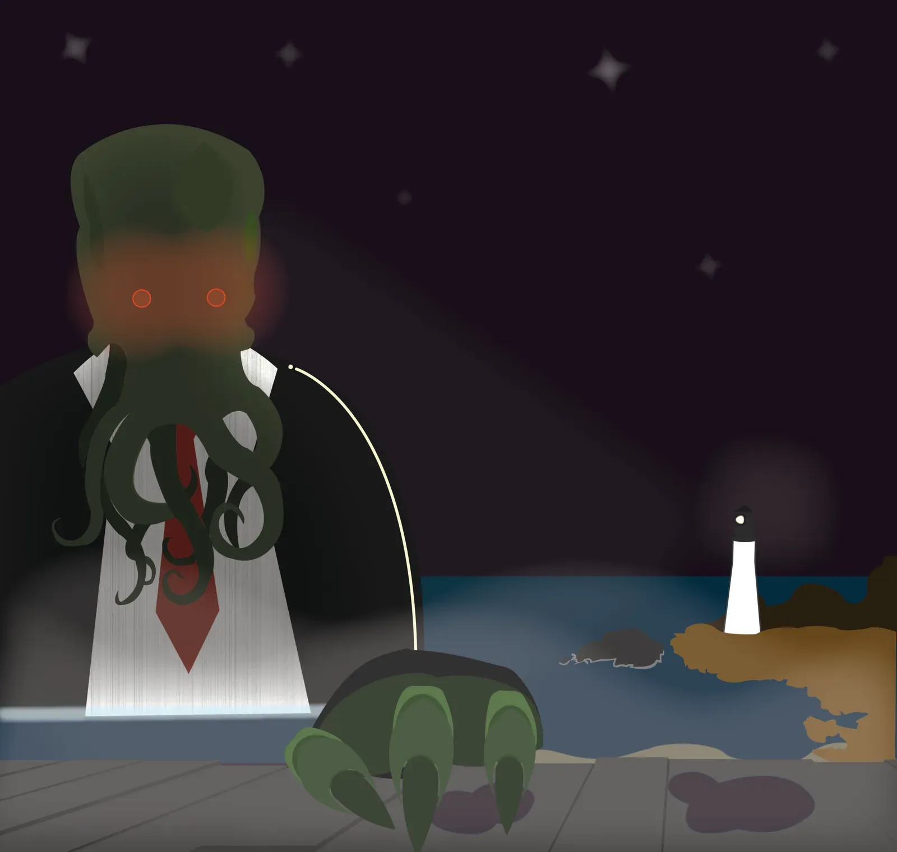
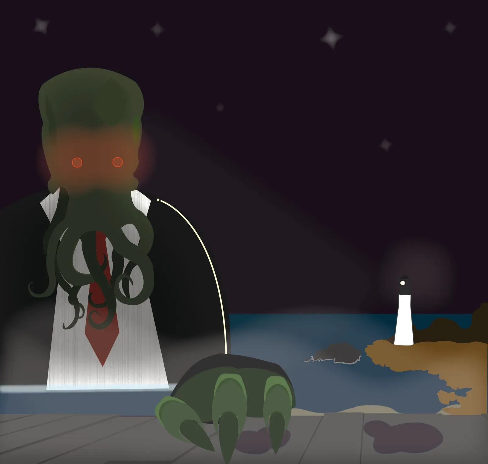

About Me
I’m Neon, a designer finishing up a Bachelor’s degree at Eastern Washington University with minors in Game Design, Philosophy, and Psychology, plus a certificate in Front-End Web Development. I came back to school planning to become a counselor, but along the way I realized my strengths — and passions — were pulling me in a different direction.
My work focuses on how people think, feel, and interact — and how design can meet them with clarity, meaning, and a little imagination. I’m especially interested in systems thinking, storytelling, and how history shapes the present in both subtle and glaring ways. (Ask me about lead poisoning or the United Fruit Company.)
Before school, I spent time working as a roofing laborer — it was physically intense but deeply rewarding. That experience taught me the value of camaraderie, perseverance, and knowing when something isn’t the right long-term fit (my balance isn’t built for rooftops, turns out).
I love to cook, I read constantly, and I believe good design starts with intention. I’m drawn to projects that explore questions, build worlds, or just make someone’s day a little better.
Let's create something thoughtful — and maybe a little weird.